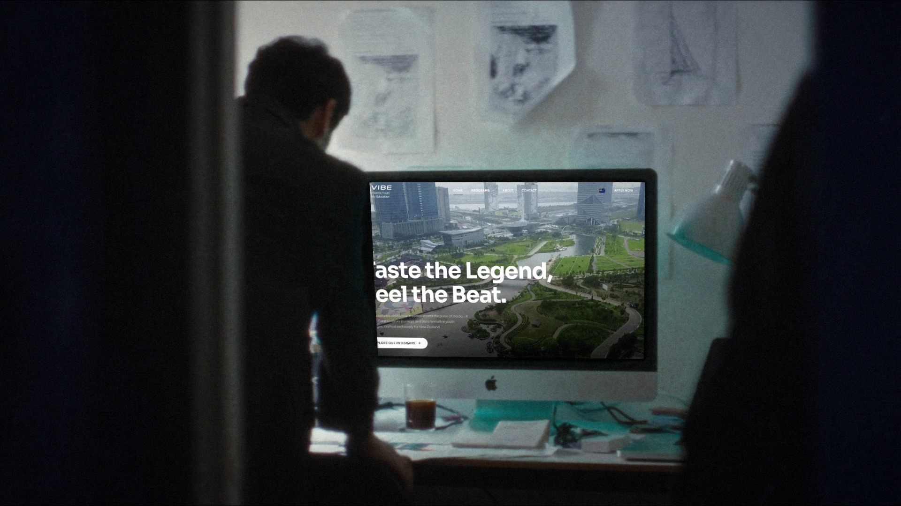
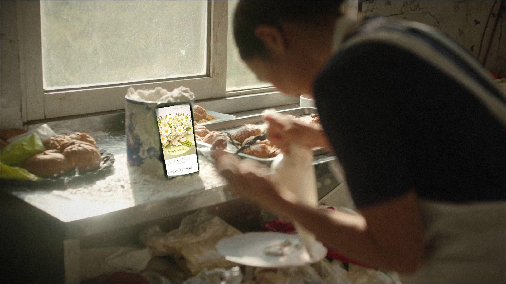
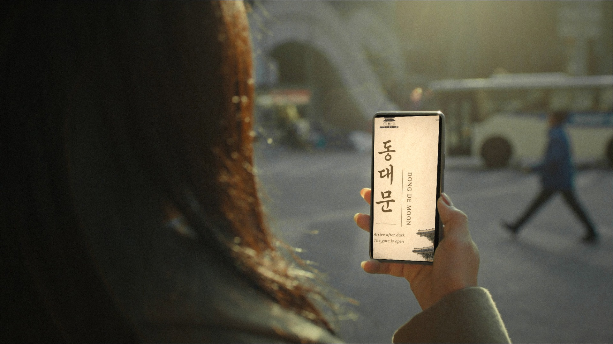
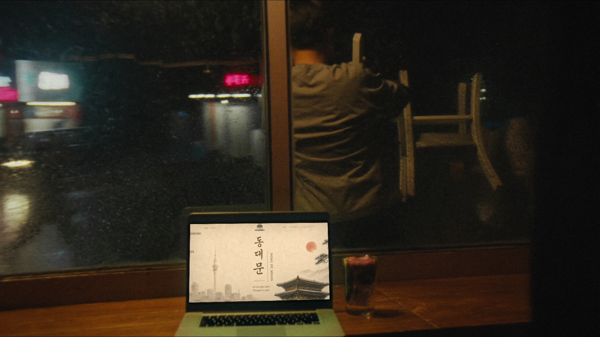

이야기: "가게는 매일 바쁘게 돌아가고, 사이트는 관리비 없이 그 옆에서 계속 일한다." 밤 → 아침 → 해 질 녘 → 비 오는 밤 → 다시 첫 장면으로 반복 (24초) 사람이 실제로 일하는 순간 · 손에 든 카메라 · 유리창 반사·빛 번짐·움직임 흐림 · 화면 속은 실제 제작 사이트 합성 · 장면당 1장만 생성

컷 1 밤 · 디자인 스튜디오, 문틈으로 본 디자이너의 뒷모습화면: K-VIBE — "여기서 만듭니다"

컷 2 이른 아침 · 케이크 가게 주방, 크림 짜는 손 옆에 세워 둔 iPhone화면: Blooming 케이크 — 사장님이 바쁠 때도 사이트는 손님을 받는다

컷 3 해 질 녘 · 횡단보도, 지나가던 사람이 휴대폰으로 식당을 찾음화면: 동대문 한식당 모바일

컷 4 비 오는 밤 · 바로 그 식당, 의자를 올리는 사장님 · 창가의 MacBook화면: 동대문 데스크톱 — 문 닫은 뒤에도 사이트는 켜져 있음 → "매달·매년 나가는 비용이 없는 웹사이트를 만듭니다." → 컷 1로 반복